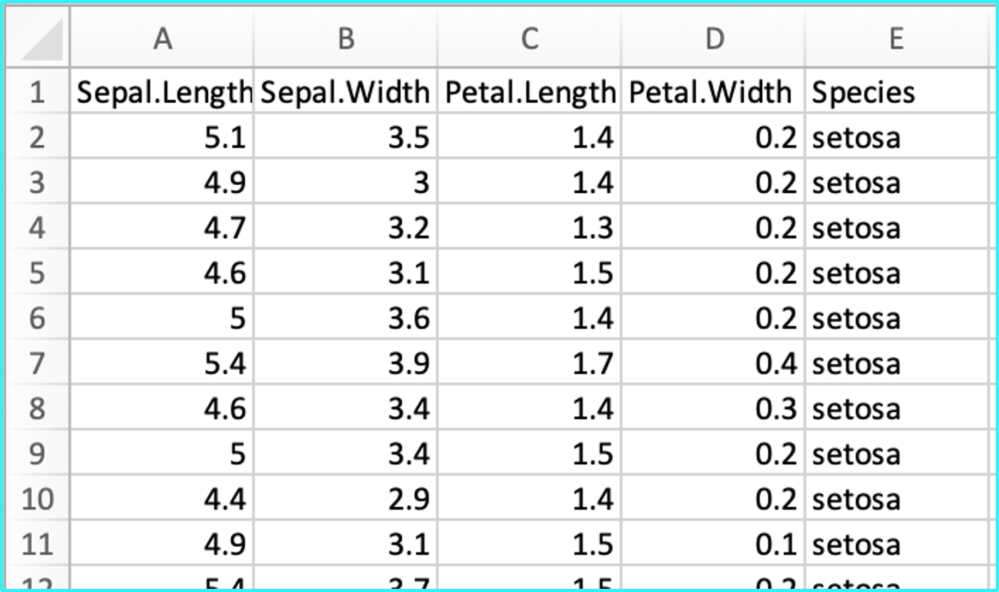
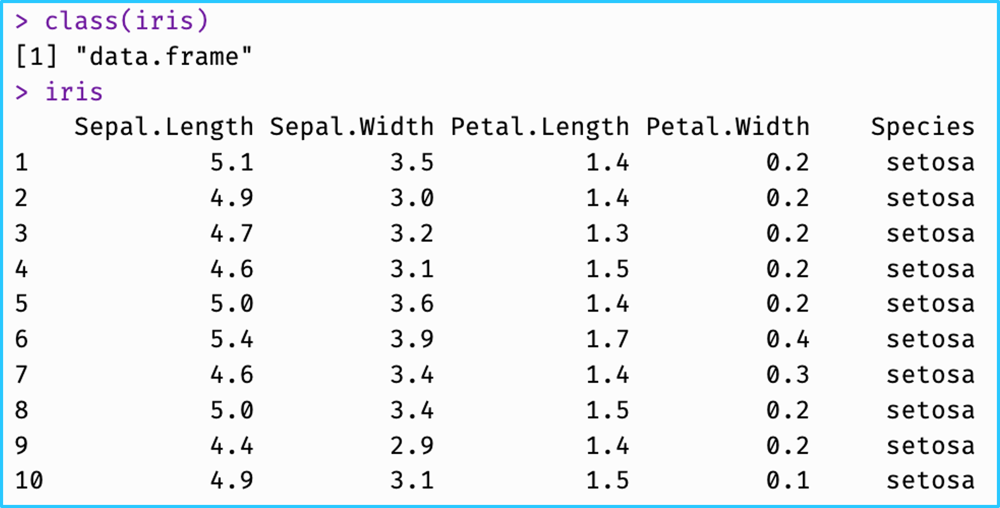
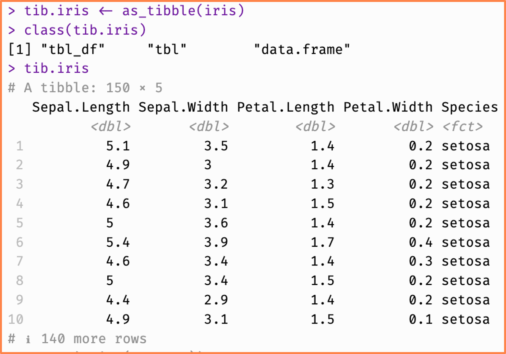

# A tibble: 30 × 8
Bag Red Green Blue Orange Yellow Brown Weight
<int> <dbl> <dbl> <dbl> <dbl> <dbl> <dbl> <dbl>
1 1 15 9 3 3 9 19 49.8
2 2 9 17 19 3 3 8 49.0
3 3 14 8 6 8 19 4 50.4
4 4 15 7 3 8 16 8 49.2
5 5 10 3 7 9 22 4 47.6
6 6 12 7 6 5 17 11 49.8
7 7 6 7 3 6 26 10 50.2
8 8 14 11 4 1 14 17 51.7
9 9 4 2 10 6 18 18 48.4
10 10 9 9 3 9 8 15 46.2
# ℹ 20 more rows

